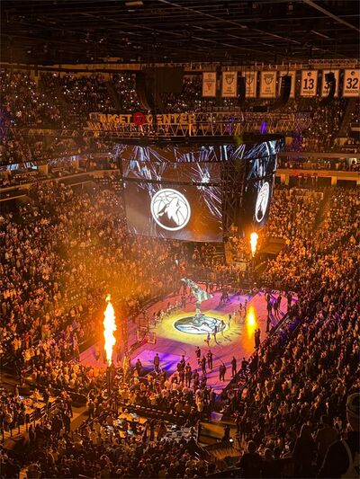
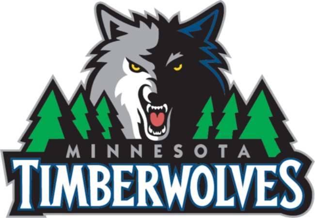
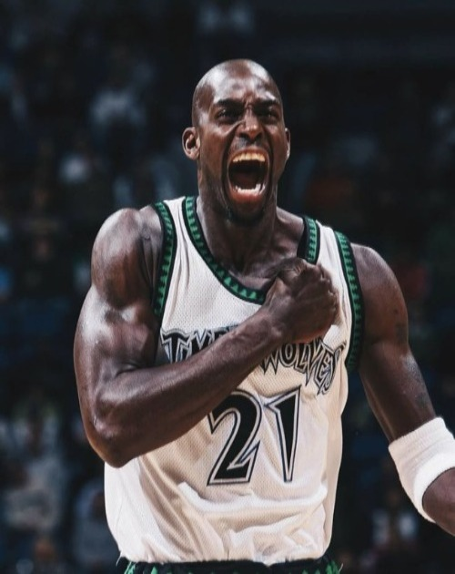
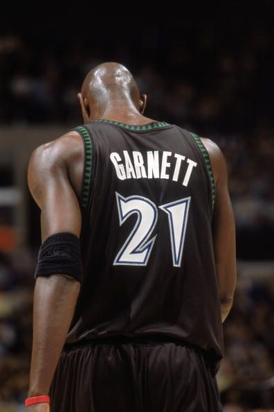
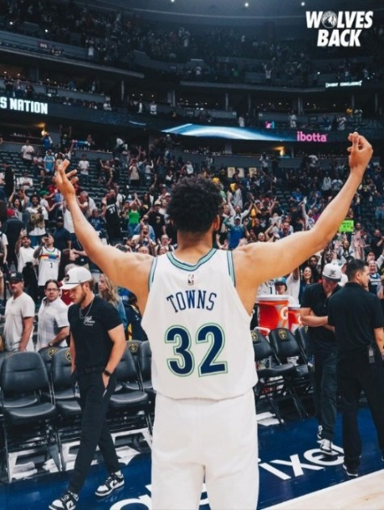
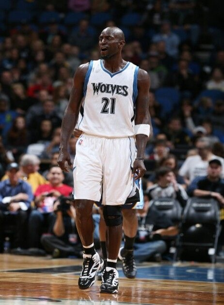
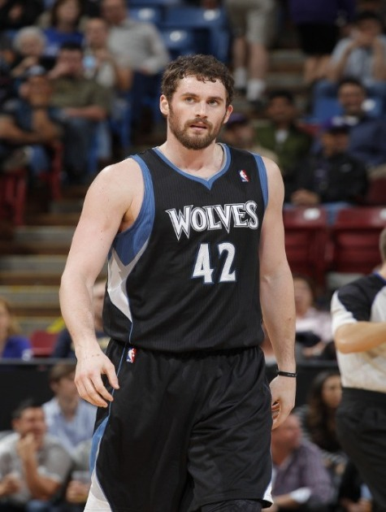
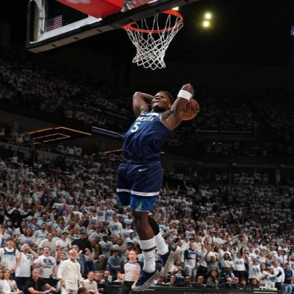
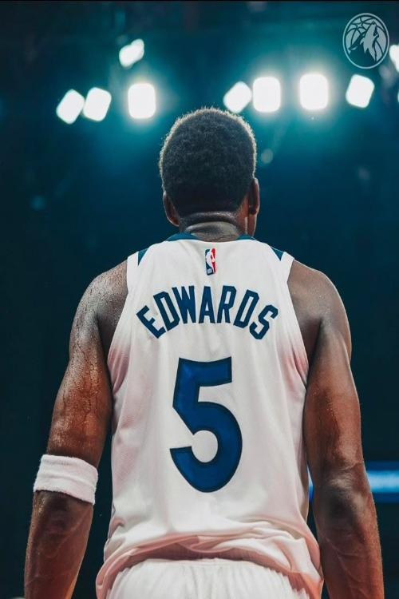

WOLVES
BACK
NBA сайт Minnesota Timberwolves
NBA сайт Minnesota Timberwolves


Клуб основан в 1989 году. За свою историю команда прошла путь от регулярного аутсайдера до топ-коллектива Западной конференции, хотя сама франшиза "Тимбервулвз" пока не выиграла чемпионский титул. Старт - "Лесные волки" прозвище в честь популяции волков в США в штате Миннесота, появились в результате расширения НБА. Свой первый матч сыграли 3 ноября 1989 года против "Сиэтл Суперсоникс"


Драфт НБА 1995 года - Миннесота выбирает под первым номером пика Кевина Гарнетта. Клуб вместе с ним полностью преобразился. Миннесота вместе с Кевином выходила 8 раз подряд в плей-офф, в 2004 году команда вышла в финал Западной конференции и в этом же году Кевин забрал награду
MVP - Самого ценного игрока года.



После обмена Гарнетта в 2007 году команда на долгие годы ушла в тень. Ярким пятном стал период с Кевином Лавом (выбранным в 2008 году), но больших успехов в плей-офф он не принес. В 2015 году в клуб вернулся легендарный Гарнетт, чтобы завершить карьеру, а уже в 2017–2019 годах «Миннесота» строила игру вокруг Джимми Батлера, с которым команда прервала затяжную серию без плей-офф


Вновь Драфт НБА 2020 года и под 1 номером был выбран Энтони Эдвардс. 24-летний Эдвардс стал суперзвездой, лицом франшизы и одним из лучших атакующих защитников НБА. Его часто сравнивают с Майклом Джорданом за взрывной атлетизм и жесткий олдскульный менталитет. В 2024 году он впервые за 20 лет вывел «Миннесоту» в Финал Западной конференции, попутно уничтожив в плей-офф «Финикс» с Дюрантом и действующих чемпионов «Денвер» с Йокичем. В сезоне 2025/2026 Эдвардс переписал рекорды франшизы, став 3-м самым молодым игроком в истории НБА, набравшим 8 000 очков (после Леброна и Дюранта), и вышел на пиковую результативность (28.8 очка за матч), закрепив за «Тимбервулвз» статус топ-клуба на годы вперед
Нажмите кнопку, чтобы загрузить последние новости